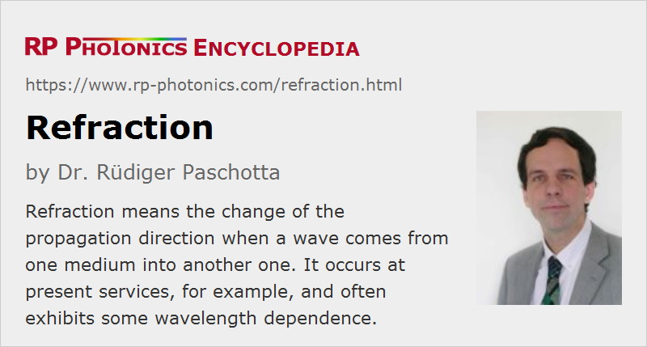

Refraction
Definition: the change of the propagation direction when a wave comes from one medium into another one
How to cite the article; suggest additional literature
Author: Dr. Rüdiger Paschotta
When light, e.g. a laser beam, propagates from one transparent homogeneous medium into another, its propagation direction will generally change (see Figure 1). This phenomenon is called refraction. It results from the boundary conditions which the incoming and the transmitted wave need to fulfill at the boundary between the two media. Essentially, the tangential components of the wave vectors need to be identical, as otherwise the phase difference between the waves at the boundary would be position-dependent, and the wavefronts could not be continuous. As the magnitude of the wave vector depends on the refractive index of the medium, the said condition can in general only be fulfilled with different propagation directions. An exception is of course the case of normal incidence, where the wave vectors have no component along the surface.
From the above considerations, one can easily derive Snell's law (the law of Snellius) for the angles:
where n1 and n2 are the refractive indices of the two media. It is apparent that the larger angle against the normal direction must occur in the medium with the smaller refractive index.
Figure 2 is an animated illustration of refraction. One can see that the wavelength is smaller on the right side (as a result of the reduced velocity of light), where the refractive index is larger. Also, the wavefronts are not interrupted at the interface, but only changed in direction. This is possible only with a modified angle of propagation.
Additional Remarks
If the incident beam comes from the medium with the higher refractive index, and its angle of incidence is large, it may not be possible to fulfill Snell's law with any output angle, since the sine of the output angle can be at most 1. In that case, transmission is not possible – total internal reflection occurs.
For the reflected beam, the angle against the surface normal is always the same as that of the incident beam (θ1): its direction is not affected by refraction.
For non-isotropic media, the refractive index can depend on the polarization direction of the light. Therefore, the refraction angle can be polarization-dependent.
The amplitude transmission and reflection coefficients of the boundary are described by the Fresnel equations.
The phenomenon of refraction is very often encountered in general optics and other fields of photonics:
- Refraction is used in most optical lenses.
- One may exploit wavelength-dependent refraction angles e.g. in prisms for separating different wavelength components.
- With birefringent optical materials, one may also obtain polarization-dependent angles. This is exploited, for example, in some types of polarizers.
- In some cases, light forces related to beam deflections by refraction are relevant.
Unusual phenomena such a negative refraction can occur with photonic metamaterials, which can have a negative refractive index. Here, the refracted beam can be on the same side of the surface normal as the incident beam.
Questions and Comments from Users
Here you can submit questions and comments. As far as they get accepted by the author, they will appear above this paragraph together with the author’s answer. The author will decide on acceptance based on certain criteria. Essentially, the issue must be of sufficiently broad interest.
Please do not enter personal data here; we would otherwise delete it soon. (See also our privacy declaration.) If you wish to receive personal feedback or consultancy from the author, please contact him e.g. via e-mail.
By submitting the information, you give your consent to the potential publication of your inputs on our website according to our rules. (If you later retract your consent, we will delete those inputs.) As your inputs are first reviewed by the author, they may be published with some delay.
See also: refractive index, total internal reflection, velocity of light, Fresnel equations, prisms, chromatic dispersion
and other articles in the category general optics
|  |
If you like this page, please share the link with your friends and colleagues, e.g. via social media:
These sharing buttons are implemented in a privacy-friendly way!